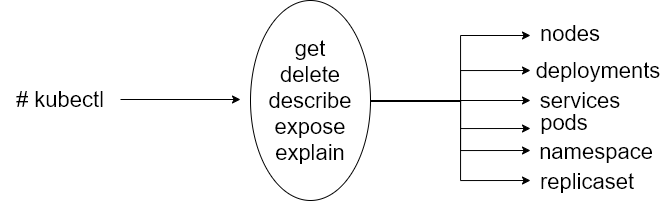

Descomplicando Kubernetes dia 2
Sumário
- Descomplicando Kubernetes dia 2
- Componentes do K8s
- Principais Comandos
- Container Network Interface
- Services
- Limitando Recursos
- Namespaces
- Kubectl taint
- Colocando o nó em modo de manutenção
Componentes do K8s
O k8s tem os seguintes componentes principais:
- Master node
- Worker node
- Services
- Controllers
- Pods
- Namespaces e quotas
- Network e policies
- Storage
kube-apiserver é a central de operações do cluster k8s. Todas as chamadas, internas ou externas são tratadas por ele. Ele é o único que conecta no ETCD.
kube-scheduller usa um algoritmo para verificar em qual node o pod deverá ser hospedado. Ele verifica os recursos disponíveis do node para verificar qual o melhor node para receber aquele pod.
No ETCD são armazenados o estado do cluster, rede e outras informações persistentes.
kube-controller-manager é o controle principal que interage com o kube-apiserver para determinar o seu estado. Se o estado não bate, o manager irá contactar o controller necessário para checar seu estado desejado. Tem diversos controllers em uso como: os endpoints, namespace e replication.
O kubelet interage com o Docker instalado no node e garante que os contêineres que precisavam estar em execução realmente estão.
O kube-proxy é o responsável por gerenciar a rede para os contêineres, é o responsável por expor portas dos mesmos.
Supervisord é o responsável por monitorar e restabelecer, se necessário, o kubelet e o Docker. Por esse motivo, quando existe algum problema em relação ao kubelet, como por exemplo o uso do driver cgroup diferente do que está rodando no Docker, você perceberá que ele ficará tentando subir o kubelet frequentemente.
Pod é a menor unidade que você irá tratar no k8s. Você poderá ter mais de um contêiner por Pod, porém vale lembrar que eles dividirão os mesmos recursos, como por exemplo IP. Uma das boas razões para se ter mais de um contêiner em um Pod é o fato de você ter os logs consolidados.
O Pod, por poder possuir diversos contêineres, muitas das vezes se assemelha a uma VM, onde você poderia ter diversos serviços rodando compartilhando o mesmo IP e demais recursos.
Services é uma forma de você expor a comunicação através de um NodePort ou LoadBalancer para distribuir as requisições entre diversos Pods daquele Deployment. Funciona como um balanceador de carga.
Principais Comandos
A figura a seguir mostra a estrutura dos principais comandos do kubectl.
|  |
|---|
| Principais comandos Ref: uploaddeimagens.com.br |
Container Network Interface
Para prover a rede para os contêineres, o k8s utiliza a especificação do CNI, Container Network Interface.
CNI é uma especificação que reúne algumas bibliotecas para o desenvolvimento de plugins para configuração e gerenciamento de redes para os contêineres. Ele provê uma interface comum entre as diversas soluções de rede para o k8s. Você encontra diversos plugins para AWS, GCP, Cloud Foundry entre outros.
Mais informações em: https://github.com/containernetworking/cni
Enquanto o CNI define a rede dos pods, ele não te ajuda na comunicação entre os pods de diferentes nodes.
As características básicas da rede do k8s são:
- Todos os pods conseguem se comunicar entre eles em diferentes nodes;
- Todos os nodes podem se comunicar com todos os pods;
- Não utilizar NAT.
Todos os IPs dos pods e nodes são roteados sem a utilização de NAT. Isso é solucionado com a utilização de algum software que te ajudará na criação de uma rede Overlay. Seguem alguns:
Mais informações em: https://kubernetes.io/docs/concepts/cluster-administration/addons/
Services
Criando um service ClusterIP
Vamos criar um pod a partir de um pod template utilizando os seguintes comandos:
kubectl run nginx --image nginx --dry-run=client -o yaml > pod-template.yaml
kubectl create -f pod-template.yaml
pod/nginx created
Expondo o pod do Nginx.
kubectl expose pod nginx --port=80
service/nginx exposed
Obtendo informações do service.
kubectl get svc
NAME TYPE CLUSTER-IP EXTERNAL-IP PORT(S) AGE
kubernetes ClusterIP 10.96.0.1 <none> 443/TCP 25m
nginx ClusterIP 10.104.209.243 <none> 80/TCP 7m15s
Execute o seguinte comando para visualizar mais detalhes do service nginx.
kubectl describe service nginx
Name: nginx
Namespace: default
Labels: run=nginx
Annotations: <none>
Selector: run=nginx
Type: ClusterIP
IP: 10.104.209.243
Port: <unset> 80/TCP
TargetPort: 80/TCP
Endpoints: 10.46.0.0:80
Session Affinity: None
Events: <none>
Acessando o Ningx. Altere o IP do cluster no comando a seguir de acordo com o seu ambiente.
curl 10.104.209.243
...
<title>Welcome to nginx!</title>
...
Acesse o log do Nginx.
kubectl logs -f nginx
10.40.0.0 - - [10/May/2020:17:31:56 +0000] "GET / HTTP/1.1" 200 612 "-" "curl/7.58.0" "-"
Remova o serviço criado anteriormente.
kubectl delete svc nginx
service "nginx" deleted
Agora vamos criar nosso service ClusterIP, porém vamos criar um arquivo yaml com suas definições:
vim primeiro-service-clusterip.yaml
Informe o seguinte conteúdo:
apiVersion: v1
kind: Service
metadata:
labels:
run: nginx
name: nginx-clusterip
namespace: default
spec:
ports:
- port: 80
protocol: TCP
targetPort: 80
selector:
run: nginx
type: ClusterIP
Criando o service:
kubectl create -f primeiro-service-clusterip.yaml
service/nginx-clusterip created
Obtendo informações do service:
kubectl get services
NAME TYPE CLUSTER-IP EXTERNAL-IP PORT(S) AGE
kubernetes ClusterIP 10.96.0.1 <none> 443/TCP 28m
nginx-clusterip ClusterIP 10.109.70.243 <none> 80/TCP 71s
Visualizando os detalhes do service:
kubectl describe service nginx-clusterip
Name: nginx-clusterip
Namespace: default
Labels: run=nginx
Annotations: <none>
Selector: run=nginx
Type: ClusterIP
IP: 10.109.70.243
Port: <unset> 80/TCP
TargetPort: 80/TCP
Endpoints: 10.46.0.1:80
Session Affinity: None
Events: <none>
Removendo o service:
kubectl delete -f primeiro-service-clusterip.yaml
service "nginx-clusterip" deleted
Agora vamos mudar um detalhe em nosso manifesto, vamos brincar com o nosso sessionAffinity:
Nota: Se você quiser ter certeza de que as conexões de um cliente específico sejam passadas para o mesmo pod todas as vezes, você pode selecionar a afinidade da sessão (session affinity) com base nos endereços IP do cliente, definindo
service.spec.sessionAffinitycomoClientIP(o padrão éNone). Você também pode definir o tempo de permanência máximo da sessão definindoservice.spec.sessionAffinityConfig.clientIP.timeoutSecondsadequadamente (o valor padrão é 10800 segundos, o que resulta em 3 horas).
vim primeiro-service-clusterip.yaml
O conteúdo deve ser o seguinte:
apiVersion: v1
kind: Service
metadata:
labels:
run: nginx
name: nginx-clusterip
namespace: default
spec:
ports:
- port: 80
protocol: TCP
targetPort: 80
selector:
run: nginx
sessionAffinity: ClientIP
type: ClusterIP
Criando o service novamente:
kubectl create -f primeiro-service-clusterip.yaml
service/nginx-clusterip created
Obtendo informações do service:
kubectl get services
NAME TYPE CLUSTER-IP EXTERNAL-IP PORT(S) AGE
kubernetes ClusterIP 10.96.0.1 <none> 443/TCP 29m
nginx-clusterip ClusterIP 10.96.44.114 <none> 80/TCP 7s
Visualizando os detalhes do service:
kubectl describe service nginx
Name: nginx-clusterip
Namespace: default
Labels: run=nginx
Annotations: <none>
Selector: run=nginx
Type: ClusterIP
IP: 10.96.44.114
Port: <unset> 80/TCP
TargetPort: 80/TCP
Endpoints: 10.46.0.1:80
Session Affinity: ClientIP
Events: <none>
Com isso, agora temos como manter a sessão, ou seja, ele irá manter a conexão com o mesmo pod, respeitando o IP de origem do cliente.
Caso precise, é possível alterar o valor do timeout para o sessionAffinity (O valor padrão é de 10800 segundos, ou seja 3 horas), apenas adicionando a configuração abaixo.
sessionAffinityConfig:
clientIP:
timeoutSeconds: 10
Agora podemos remover o service:
kubectl delete -f primeiro-service-clusterip.yaml
service "nginx-clusterip" deleted
Criando um service NodePort
Execute o comando a seguir para exportar o pod usando o service NodePort. Lembrando que o range de portas internas é entre 30000/TCP a 32767/TCP.
kubectl expose pods nginx --type=NodePort --port=80
service/nginx exposed
Obtendo informações do service:
kubectl get svc
NAME TYPE CLUSTER-IP EXTERNAL-IP PORT(S) AGE
kubernetes ClusterIP 10.96.0.1 <none> 443/TCP 29m
nginx NodePort 10.101.42.230 <none> 80:31858/TCP 5s
Removendo o service:
kubectl delete svc nginx
service "nginx" deleted
Agora vamos criar um service NodePort, porém vamos criar um manifesto yaml com suas definições.
vim primeiro-service-nodeport.yaml
O conteúdo deve ser o seguinte.
apiVersion: v1
kind: Service
metadata:
labels:
run: nginx
name: nginx-nodeport
namespace: default
spec:
externalTrafficPolicy: Cluster
ports:
- nodePort: 31111
port: 80
protocol: TCP
targetPort: 80
selector:
run: nginx
sessionAffinity: None
type: NodePort
Criando o service:
kubectl create -f primeiro-service-nodeport.yaml
service/nginx-nodeport created
Obtendo informações do service:
kubectl get services
NAME TYPE CLUSTER-IP EXTERNAL-IP PORT(S) AGE
kubernetes ClusterIP 10.96.0.1 <none> 443/TCP 30m
nginx-nodeport NodePort 10.102.91.81 <none> 80:31111/TCP 7s
Visualizando os detalhes do service:
kubectl describe service nginx
Name: nginx-nodeport
Namespace: default
Labels: run=nginx
Annotations: <none>
Selector: run=nginx
Type: NodePort
IP: 10.102.91.81
Port: <unset> 80/TCP
TargetPort: 80/TCP
NodePort: <unset> 31111/TCP
Endpoints: 10.46.0.1:80
Session Affinity: None
External Traffic Policy: Cluster
Events: <none>
Removendo o service:
kubectl delete -f primeiro-service-nodeport.yaml
service "nginx-nodeport" deleted
Criando um service LoadBalancer
Execute o comando a seguir para exportar o pod usando o service LoadBalancer.
kubectl expose pod nginx --type=LoadBalancer --port=80
service/nginx exposed
Obtendo informações do service:
kubectl get svc
NAME TYPE CLUSTER-IP EXTERNAL-IP PORT(S) AGE
kubernetes ClusterIP 10.96.0.1 <none> 443/TCP 32m
nginx LoadBalancer 10.110.198.89 <pending> 80:30728/TCP 4s
Removendo o service:
kubectl delete svc nginx
service "nginx" deleted
Agora vamos criar service LoadBalancer, porém vamos criar um yaml com suas definições.
vim primeiro-service-loadbalancer.yaml
O conteúdo deve ser o seguinte.
apiVersion: v1
kind: Service
metadata:
labels:
run: nginx
name: nginx-loadbalancer
namespace: default
spec:
externalTrafficPolicy: Cluster
ports:
- nodePort: 31222
port: 80
protocol: TCP
targetPort: 80
selector:
run: nginx
sessionAffinity: None
type: LoadBalancer
Criando o service:
kubectl create -f primeiro-service-loadbalancer.yaml
service/nginx-loadbalancer created
Obtendo informações do service:
kubectl get services
NAME TYPE CLUSTER-IP EXTERNAL-IP PORT(S) AGE
kubernetes ClusterIP 10.96.0.1 <none> 443/TCP 33m
nginx-loadbalancer LoadBalancer 10.96.67.165 <pending> 80:31222/TCP 4s
Visualizando informações do service:
kubectl describe service nginx
Name: nginx-loadbalancer
Namespace: default
Labels: run=nginx
Annotations: <none>
Selector: run=nginx
Type: LoadBalancer
IP: 10.96.67.165
Port: <unset> 80/TCP
TargetPort: 80/TCP
NodePort: <unset> 31222/TCP
Endpoints: 10.46.0.1:80
Session Affinity: None
External Traffic Policy: Cluster
Events: <none>
Removendo o service:
kubectl delete -f primeiro-service-loadbalancer.yaml
service "nginx-loadbalancer" deleted
EndPoint
Sempre que criamos um service, automaticamente é criado um endpoint. O endpoint nada mais é do que o IP do pod que o service irá utilizar, por exemplo, quando criamos um service do tipo ClusterIP temos o seu IP, correto?
Agora, quando batemos nesse IP ele redireciona a conexão para o Pod através desse IP, o EndPoint.
Para listar os EndPoints criados, execute o comando:
kubectl get endpoints
NAME ENDPOINTS AGE
kubernetes 10.142.0.5:6443 4d
Vamos verificar esse endpoint com mais detalhes.
kubectl describe endpoints kubernetes
Name: kubernetes
Namespace: default
Labels: <none>
Annotations: <none>
Subsets:
Addresses: 172.31.17.67
NotReadyAddresses: <none>
Ports:
Name Port Protocol
---- ---- --------
https 6443 TCP
Events: <none>
Vamos fazer um exemplo, para isso, vamos realizar a criação de um deployment, aumentar o número de réplicas para 3 e na sequência um service para que possamos ver com mais detalhes os endpoints que serão criados.
kubectl create deployment nginx --image=nginx
deployment.apps/nginx created
Observando os deployments:
kubectl get deployments.apps
NAME READY UP-TO-DATE AVAILABLE AGE
nginx 1/1 1 1 5s
Escalando o deployment nginx para 3 réplicas:
kubectl scale deployment nginx --replicas=3
deployment.apps/nginx scaled
Observando os deployments:
kubectl get deployments.apps
NAME READY UP-TO-DATE AVAILABLE AGE
nginx 3/3 3 3 1m5s
Expondo o deployment nginx:
kubectl expose deployment nginx --port=80
service/nginx exposed
Visualizando o service:
kubectl get svc
NAME TYPE CLUSTER-IP EXTERNAL-IP PORT(S) AGE
kubernetes ClusterIP 10.96.0.1 <none> 443/TCP 40m
nginx ClusterIP 10.98.153.22 <none> 80/TCP 6s
Acessando o nginx:
curl 10.98.153.22
...
<h1>Welcome to nginx!</h1>
...
Visualizando os endpoints:
kubectl get endpoints
NAME ENDPOINTS AGE
kubernetes 172.31.17.67:6443 44m
nginx 10.32.0.2:80,10.32.0.3:80,10.46.0.2:80 3m31s
Visualizando os detalhes do endpoint nginx:
kubectl describe endpoints nginx
Name: nginx
Namespace: default
Labels: app=nginx
Annotations: endpoints.kubernetes.io/last-change-trigger-time: 2020-05-10T17:47:05Z
Subsets:
Addresses: 10.32.0.2,10.32.0.3,10.46.0.2
NotReadyAddresses: <none>
Ports:
Name Port Protocol
---- ---- --------
<unset> 80 TCP
Events: <none>
Visualizando o endpoint no formato YAML.
kubectl get endpoints -o yaml
apiVersion: v1
items:
- apiVersion: v1
kind: Endpoints
metadata:
creationTimestamp: "2020-05-10T17:06:12Z"
managedFields:
- apiVersion: v1
fieldsType: FieldsV1
fieldsV1:
f:subsets: {}
manager: kube-apiserver
operation: Update
time: "2020-05-10T17:06:12Z"
name: kubernetes
namespace: default
resourceVersion: "163"
selfLink: /api/v1/namespaces/default/endpoints/kubernetes
uid: 39f1e237-f9cc-4553-a32d-95402ff52f6c
...
- ip: 10.46.0.2
nodeName: elliot-03
targetRef:
kind: Pod
name: nginx-f89759699-dmt4t
namespace: default
resourceVersion: "6805"
uid: 6a9c4639-78ee-44c6-8eb1-4fd90d308189
ports:
- port: 80
protocol: TCP
kind: List
metadata:
resourceVersion: ""
selfLink: ""
Removendo o deployment nginx:
kubectl delete deployment nginx
deployment.apps "nginx" deleted
Removendo o service:
kubectl delete service nginx
service "nginx" deleted
Limitando Recursos
Quando criamos um Pod podemos especificar a quantidade de CPU e Memória (RAM) que pode ser consumida em cada contêiner. Quando algum contêiner contém a configuração de limite de recursos o Scheduler fica responsável por alocar esse contêiner no melhor nó possível de acordo com os recursos disponíveis.
Podemos configurar dois tipos de recursos, CPU que é especificada em unidades de núcleos e Memória que é especificada em unidades de bytes.
Vamos criar nosso primeiro Deployment com limite de recursos, para isso vamos subir a imagem de um nginx e copiar o yaml do deployment com o seguinte comando.
kubectl create deployment nginx --image=nginx
deployment.apps/nginx created
Escalando o deployment para 3 réplicas:
kubectl scale deployment nginx --replicas=3
deployment.apps/nginx scaled
Obtendo a lista de deployments:
kubectl get deployments
NAME READY UP-TO-DATE AVAILABLE AGE
nginx 3/3 3 3 24s
Crie o seguinte arquivo:
vim deployment-limitado.yaml
O conteúdo deve ser o seguinte.
apiVersion: apps/v1
kind: Deployment
metadata:
labels:
app: nginx
name: nginx
namespace: default
spec:
progressDeadlineSeconds: 600
replicas: 3
revisionHistoryLimit: 10
selector:
matchLabels:
app: nginx
strategy:
rollingUpdate:
maxSurge: 25%
maxUnavailable: 25%
type: RollingUpdate
template:
metadata:
creationTimestamp: null
labels:
app: nginx
spec:
containers:
- image: nginx
imagePullPolicy: Always
name: nginx
# Adicione as seguintes linhas
resources:
limits:
memory: "256Mi"
cpu: "200m"
requests:
memory: "128Mi"
cpu: "50m"
terminationMessagePath: /dev/termination-log
terminationMessagePolicy: File
dnsPolicy: ClusterFirst
restartPolicy: Always
schedulerName: default-scheduler
securityContext: {}
terminationGracePeriodSeconds: 30
Atenção!!! 1 core de CPU corresponde a
1000m(1000 milicore). Ao especificar200m, estamos querendo reservar 20% de 1 core da CPU. Se fosse informado o valor0.2teria o mesmo efeito, ou seja, seria reservado 20% de 1 core da CPU.
Vamos remover o deployment do nginx:
kubectl delete deployments.apps nginx
Agora vamos criar nosso deployment e verificar os recursos.
kubectl create -f deployment-limitado.yaml
deployment.apps/nginx created
Vamos acessar um contêiner e testar a configuração:
kubectl get pod
NAME READY STATUS RESTARTS AGE
nginx 1/1 Running 0 12m
nginx-f89759699-77v8b 1/1 Running 0 117s
nginx-f89759699-ffbgh 1/1 Running 0 117s
nginx-f89759699-vzvlt 1/1 Running 0 2m2s
Acessando o shell de um pod:
kubectl exec -ti nginx-f89759699-77v8b -- /bin/bash
Agora no contêiner, instale e execute o stress para simular a carga em nossos recursos, no caso CPU e memória.
Instalando o comando stress:
apt-get update && apt-get install -y stress
Executando o stress:
stress --vm 1 --vm-bytes 128M --cpu 1
stress: info: [221] dispatching hogs: 1 cpu, 0 io, 1 vm, 0 hdd
Aqui estamos stressando o contêiner, utilizando 128M de RAM e um core de CPU. Brinque de acordo com os limites que você estabeleceu.
Quando ultrapassar o limite configurado, você receberá um erro como mostrado ao executar o seguinte comando, pois ele não conseguirá alocar os recursos de memória:
stress --vm 1 --vm-bytes 512M --cpu 1
stress: info: [230] dispatching hogs: 1 cpu, 0 io, 1 vm, 0 hdd
stress: FAIL: [230] (415) <-- worker 232 got signal 9
stress: WARN: [230] (417) now reaping child worker processes
stress: FAIL: [230] (451) failed run completed in 0s
Para acompanhar a quantidade de recurso que o pod está utilizando, podemos utilizar o kubectl top. Lembre-se de executar esse comando no node e não no contêiner. :)
kubectl top pod --namespace=default nginx-f89759699-77v8b
NAME CPU(cores) MEMORY(bytes)
nginx-85f7fb6b45-b6dsk 201m 226Mi
Namespaces
No kubernetes temos um cara chamado de Namespaces como já vimos anteriormente.
Mas o que é um Namespace? Nada mais é do que um cluster virtual dentro do próprio cluster físico do Kubernetes. Namespaces são uma maneira de dividir recursos de um cluster entre vários ambientes, equipes ou projetos.
Vamos criar nosso primeiro namespaces:
kubectl create namespace primeiro-namespace
namespace/primeiro-namespace created
Vamos listar todos os namespaces do kubernetes:
kubectl get namespaces
NAME STATUS AGE
default Active 55m
kube-node-lease Active 56m
kube-public Active 56m
kube-system Active 56m
primeiro-namespace Active 5s
Pegando mais informações do nosso namespace:
kubectl describe namespace primeiro-namespace
Name: primeiro-namespace
Labels: <none>
Annotations: <none>
Status: Active
No resource quota.
No LimitRange resource.
Como podemos ver, nosso namespace ainda está sem configurações, então iremos utilizar o LimitRange para adicionar limites de recursos.
Vamos criar o manifesto do LimitRange:
vim limitando-recursos.yaml
O conteúdo deve ser o seguinte.
apiVersion: v1
kind: LimitRange
metadata:
name: limitando-recursos
spec:
limits:
- default:
cpu: 1
memory: 100Mi
defaultRequest:
cpu: 0.5
memory: 80Mi
type: Container
Agora vamos adicionar esse LimitRange ao Namespace:
kubectl create -f limitando-recursos.yaml -n primeiro-namespace
limitrange/limitando-recursos created
Listando o LimitRange:
kubectl get limitranges
No resources found in default namespace.
Opa! Não encontramos não é mesmo? Mas claro, esquecemos de passar nosso namespace na hora de listar:
kubectl get limitrange -n primeiro-namespace
NAME CREATED AT
limitando-recursos 2020-05-10T18:02:51Z
Ou:
kubectl get limitrange --all-namespaces
NAMESPACE NAME CREATED AT
primeiro-namespace limitando-recursos 2020-05-10T18:02:51Z
Vamos dar um describe no LimitRange:
kubectl describe limitrange -n primeiro-namespace
Name: limitando-recursos
Namespace: primeiro-namespace
Type Resource Min Max Default Request Default Limit Max Limit/Request Ratio
---- -------- --- --- --------------- ------------- -----------------------
Container cpu - - 500m 1 -
Container memory - - 80Mi 100Mi -
Como podemos observar, adicionamos limites de memória e cpu para cada contêiner que subir nesse Namespace, se algum contêiner for criado dentro do Namespace sem as configurações de Limitrange, o contêiner irá herdar as configurações de limites de recursos do Namespace.
Vamos criar um pod para verificar se o limite se aplicará:
vim pod-limitrange.yaml
O conteúdo deve ser o seguinte.
apiVersion: v1
kind: Pod
metadata:
name: limit-pod
spec:
containers:
- name: meu-container
image: nginx
Agora vamos criar um pod fora do namespace default e outro dentro do namespace limitado (primeiro-namespace), e vamos observar os limites de recursos de cada contêiner e como foram aplicados:
Criando o pod no namespace default:
kubectl create -f pod-limitrange.yaml
pod/limit-pod created
Criando o pod no namespace primeiro-namespace:
kubectl create -f pod-limitrange.yaml -n primeiro-namespace
pod/limit-pod created
Vamos listar esses pods e na sequência ver mais detalhes :
kubectl get pods --all-namespaces
NAMESPACE NAME READY STATUS RESTARTS AGE
default limit-pod 1/1 Running 0 10s
primeiro-namespace limit-pod 1/1 Running 0 5s
Vamos ver mais detalhes do pod no namespace default.
kubectl describe pod limit-pod
Name: limit-pod
Namespace: default
Priority: 0
Node: elliot-02/172.31.19.123
Start Time: Sun, 10 May 2020 18:03:52 +0000
Labels: <none>
Annotations: <none>
Status: Running
IP: 10.32.0.4
IPs:
IP: 10.32.0.4
Containers:
meu-container:
Container ID: docker://19850dc935ffa41b1754cb58ab60ec5bb3616bbbe6a958abe1b2575bd26ee73d
Image: nginx
...
Vamos ver mais detalhes do pod no namespace primeiro-namespace.
kubectl describe pod limit-pod -n primeiro-namespace
Name: limit-pod
Namespace: primeiro-namespace
Priority: 0
Node: elliot-03/172.31.24.60
Start Time: Sun, 10 May 2020 18:03:57 +0000
Labels: <none>
Annotations: kubernetes.io/limit-ranger:
LimitRanger plugin set: cpu, memory request for container meu-container; cpu, memory limit for container meu-container
Status: Running
IP: 10.46.0.3
IPs:
IP: 10.46.0.3
Containers:
meu-container:
Container ID: docker://ad3760837d71955df47263a2031d4238da2e94002ce4a0631475d301faf1ddef
Image: nginx
...
Limits:
cpu: 1
memory: 100Mi
Requests:
cpu: 500m
memory: 80Mi
Como podemos ver o Pod no namespace primeiro-namespace está com limit de recursos configurados.
Kubectl taint
O Taint nada mais é do que adicionar propriedades ao nó do cluster para impedir que os pods sejam alocados em nós inapropriados.
Por exemplo, todo nó master do cluster é marcado para não receber pods que não sejam de gerenciamento do cluster.
O nó master está marcado com o taint NoSchedule, assim o scheduler do Kubernetes não aloca pods no nó master, e procura outros nós no cluster sem essa marca.
Visualizando os nodes do cluster:
kubectl get nodes
NAME STATUS ROLES AGE VERSION
elliot-01 Ready master 7d14h v1.18.2
elliot-02 Ready <none> 7d14h v1.18.2
elliot-03 Ready <none> 7d14h v1.18.2
Visualizando as labels Taints do node master:
kubectl describe node elliot-01 | grep -i taint
Taints: node-role.kubernetes.io/master:NoSchedule
Vamos testar algumas coisas e permitir que o nó master rode outros pods.
Primeiro vamos rodar 3 réplicas de nginx:
kubectl create deployment nginx --image=nginx
deployment.apps/nginx created
Visualizando os deployments:
kubectl get deployments.apps
NAME READY UP-TO-DATE AVAILABLE AGE
nginx 1/1 1 1 5s
Escalando o deployment do nginx para 3 réplicas:
kubectl scale deployment nginx --replicas=3
deployment.apps/nginx scaled
Visualizando novamente os deployments:
kubectl get deployments.apps
NAME READY UP-TO-DATE AVAILABLE AGE
nginx 3/3 3 3 1m5s
Visualizando os detalhes dos pods:
kubectl get pods -o wide
NAME READY STATUS RESTARTS AGE IP NODE NOMINATED NODE READINESS GATES
limit-pod 1/1 Running 0 3m44s 10.32.0.4 elliot-02 <none> <none>
nginx 1/1 Running 0 25m 10.46.0.1 elliot-03 <none> <none>
nginx-85f7fb6b45-9bzwc 1/1 Running 0 6m7s 10.32.0.3 elliot-02 <none> <none>
nginx-85f7fb6b45-cbmtr 1/1 Running 0 6m7s 10.46.0.2 elliot-03 <none> <none>
nginx-85f7fb6b45-rprz5 1/1 Running 0 6m7s 10.32.0.2 elliot-02 <none> <none>
Vamos adicionar a marca NoSchedule aos nós worker também para ver como eles se comportam.
Node worker 1:
kubectl taint node elliot-02 key1=value1:NoSchedule
node/elliot-02 tainted
Node worker 2:
kubectl taint node elliot-03 key1=value1:NoSchedule
node/elliot-03 tainted
Visualizando a label Taint no node worker 1:
kubectl describe node elliot-02 | grep -i taint
Taints: key1=value1:NoSchedule
Visualizando a label Taint no node worker 2:
kubectl describe node elliot-03 | grep -i taint
Taints: key1=value1:NoSchedule
Agora vamos aumentar a quantidade de réplicas:
kubectl scale deployment nginx --replicas=5
deployment.apps/nginx scaled
Visualizando os detalhes dos pods:
kubectl get pods -o wide
NAME READY STATUS RESTARTS AGE IP NODE NOMINATED NODE READINESS GATES
limit-pod 1/1 Running 0 5m23s 10.32.0.4 elliot-02 <none> <none>
nginx 1/1 Running 0 27m 10.46.0.1 elliot-03 <none> <none>
nginx-85f7fb6b45-9bzwc 1/1 Running 0 7m46s 10.32.0.3 elliot-02 <none> <none>
nginx-85f7fb6b45-cbmtr 1/1 Running 0 7m46s 10.46.0.2 elliot-03 <none> <none>
nginx-85f7fb6b45-qnhtl 0/1 Pending 0 18s <none> <none> <none> <none>
nginx-85f7fb6b45-qsvpp 0/1 Pending 0 18s <none> <none> <none> <none>
nginx-85f7fb6b45-rprz5 1/1 Running 0 7m46s 10.32.0.2 elliot-02 <none> <none>
Como podemos ver, as nova réplicas ficaram órfãs esperando aparecer um nó com as prioridades adequadas para o Scheduler.
Vamos remover esse Taint dos nossos nós worker:
Removendo o taint do worker 1:
kubectl taint node elliot-02 key1:NoSchedule-
node/elliot-02 untainted
Removendo o taint do worker 2:
kubectl taint node elliot-03 key1:NoSchedule-
node/elliot-03 untainted
Visualizando os detalhes dos pods:
kubectl get pods -o wide
NAME READY STATUS RESTARTS AGE IP NODE NOMINATED NODE READINESS GATES
limit-pod 1/1 Running 0 6m17s 10.32.0.4 elliot-02 <none> <none>
nginx 1/1 Running 0 27m 10.46.0.1 elliot-03 <none> <none>
nginx-85f7fb6b45-9bzwc 1/1 Running 0 8m40s 10.32.0.3 elliot-02 <none> <none>
nginx-85f7fb6b45-cbmtr 1/1 Running 0 8m40s 10.46.0.2 elliot-03 <none> <none>
nginx-85f7fb6b45-qnhtl 1/1 Running 0 72s 10.46.0.5 elliot-03 <none> <none>
nginx-85f7fb6b45-qsvpp 1/1 Running 0 72s 10.46.0.4 elliot-03 <none> <none>
nginx-85f7fb6b45-rprz5 1/1 Running 0 8m40s 10.32.0.2 elliot-02 <none> <none>
Existem vários tipos de marcas que podemos usar para classificar os nós, vamos testar uma outra chamada NoExecute, que impede o Scheduler de agendar Pods nesses nós.
Adicionando a marca NoExecute no worker 1:
kubectl taint node elliot-02 key1=value1:NoExecute
node/elliot-02 tainted
Adicionando a marca NoExecute no worker 2:
kubectl taint node elliot-03 key1=value1:NoExecute
node/elliot-03 tainted
Visualizando os detalhes dos pods:
kubectl get pods
NAME READY STATUS RESTARTS AGE
nginx-85f7fb6b45-87sq5 0/1 Pending 0 20s
nginx-85f7fb6b45-8q99g 0/1 Pending 0 20s
nginx-85f7fb6b45-drmzz 0/1 Pending 0 20s
nginx-85f7fb6b45-hb4dp 0/1 Pending 0 20s
nginx-85f7fb6b45-l6zln 0/1 Pending 0 20s
Como podemos ver todos os Pods estão órfãs. Porque o nó master tem a marca taint NoScheduler default do kubernetes e os nós worker tem a marca NoExecute.
Vamos diminuir a quantidade de réplicas para ver o que acontece.
Reduzindo a quantidade de réplicas no worker 1:
kubectl scale deployment nginx --replicas=1
deployment.apps/nginx scaled
Reduzindo a quantidade de réplicas no worker 2:
kubectl get pods
nginx-85f7fb6b45-drmzz 0/1 Pending 0 43s
Vamos remover o taint NoExecute do nós workers.
Removendo o taint no worker 1:
kubectl taint node elliot-02 key1:NoExecute-
node/elliot-02 untainted
Removendo o taint no worker 2:
kubectl taint node elliot-03 key1:NoExecute-
node/elliot-03 untainted
Visualizando os detalhes dos pods:
kubectl get pods
NAME READY STATUS RESTARTS AGE
nginx-85f7fb6b45-drmzz 1/1 Running 0 76s
Agora temos um nó operando normalmente.
Mas e se nossos workers ficarem indisponíveis, podemos rodar Pods no nó master?
Claro que podemos, vamos configurar nosso nó master para que o Scheduler consiga agenda Pods nele.
kubectl taint nodes --all node-role.kubernetes.io/master-
node/elliot-01 untainted
Visualizando a marca taint no nó master.
kubectl describe node elliot-01 | grep -i taint
Taints: <none>
Agora vamos aumentar a quantidade de réplicas do nosso pod nginx.
kubectl scale deployment nginx --replicas=4
deployment.apps/nginx scaled
Visualizando os detalhes dos pods:
kubectl get pods -o wide
NAME READY STATUS RESTARTS AGE IP NODE NOMINATED NODE READINESS GATES
nginx-85f7fb6b45-2c6dm 1/1 Running 0 9s 10.32.0.2 elliot-02 <none> <none>
nginx-85f7fb6b45-4jzcn 1/1 Running 0 9s 10.32.0.3 elliot-02 <none> <none>
nginx-85f7fb6b45-drmzz 1/1 Running 0 114s 10.46.0.1 elliot-03 <none> <none>
nginx-85f7fb6b45-rstvq 1/1 Running 0 9s 10.46.0.2 elliot-03 <none> <none>
Vamos adicionar o Taint NoExecute nos nós worker para ver o que acontece.
Adicionando o taint no worker 1:
kubectl taint node elliot-02 key1=value1:NoExecute
node/elliot-02 tainted
Adicionando o taint no worker 2:
kubectl taint node elliot-03 key1=value1:NoExecute
node/elliot-03 tainted
Visualizando os detalhes do pods:
kubectl get pods -o wide
NAME READY STATUS RESTARTS AGE IP NODE NOMINATED NODE READINESS GATES
nginx-85f7fb6b45-49knz 1/1 Running 0 14s 10.40.0.5 elliot-01 <none> <none>
nginx-85f7fb6b45-4cm9x 1/1 Running 0 14s 10.40.0.4 elliot-01 <none> <none>
nginx-85f7fb6b45-kppnd 1/1 Running 0 14s 10.40.0.6 elliot-01 <none> <none>
nginx-85f7fb6b45-rjlmj 1/1 Running 0 14s 10.40.0.3 elliot-01 <none> <none>
Removendo o deployment nginx:
kubectl delete deployment nginx
deployment.extensions "nginx" deleted
O Scheduler alocou tudo no nó master, como podemos ver o Taint pode ser usado para ajustar configurações de qual Pod deve ser alocado em qual nó.
Vamos permitir que nosso Scheduler aloque e execute os Pods em todos os nós:
Removendo o taint NoSchedule em todos os nós do cluster:
kubectl taint node --all key1:NoSchedule-
node/elliot-01 untainted
node/elliot-02 untainted
node/elliot-03 untainted
Removendo o taint NoExecute em todos os nós do cluster:
kubectl taint node --all key1:NoExecute-
node/kube-worker1 untainted
node/kube-worker2 untainted
error: taint "key1:NoExecute" not found
Visualizando os taints dos nodes:
kubectl describe node elliot-01 | grep -i taint
Taints: <none>
Colocando o nó em modo de manutenção
Para colocar o nó em manutenção iremos utilizar o cordon.
kubectl cordon elliot-02
node/elliot-02 cordoned
Visualizando o node em manutenção.
kubectl get nodes
NAME STATUS ROLES AGE VERSION
elliot-01 Ready master 7d14h v1.18.2
elliot-02 Ready,SchedulingDisabled <none> 7d14h v1.18.2
elliot-03 Ready <none> 7d14h v1.18.2
Repare que o nó elliot-02 ficou com o status Ready,SchedulingDisabled, agora você pode fazer a manutenção no seu node tranquilamente. Para retirar nó de modo de manutenção, iremos utilizar o uncordon.
kubectl uncordon elliot-02
node/elliot-02 uncordoned
Visualizando novamente os nós.
kubectl get nodes
NAME STATUS ROLES AGE VERSION
elliot-01 Ready master 7d14h v1.18.2
elliot-02 Ready <none> 7d14h v1.18.2
elliot-03 Ready <none> 7d14h v1.18.2
Pronto, agora seu nó não está mais em modo de manutenção.